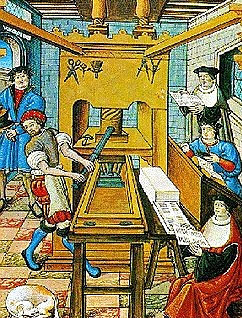

Imprenta europea siglo XV |
Los primeros
caracteres de imprenta fueron desarrollados por los chinos antes
del año 1000, pero no es hasta mediados del siglo XV
cuando el alemán Joanes Gutemberg desarrolla la primera imprenta
de caracteres.
La imprenta es quizás el invento que más contribuye al
desarrollo de la ciencia y la técnica. Antes de la imprenta
los libros eran escasos ya que se copiaban a mano. Con la
aparición de ésta, los libros se popularizan y el saber
se difunde por Europa primero y por el resto del mundo después.
La imprenta hace posible la revolución científico-tecnológica
que se produjo en Europa en los siglos siguientes. |